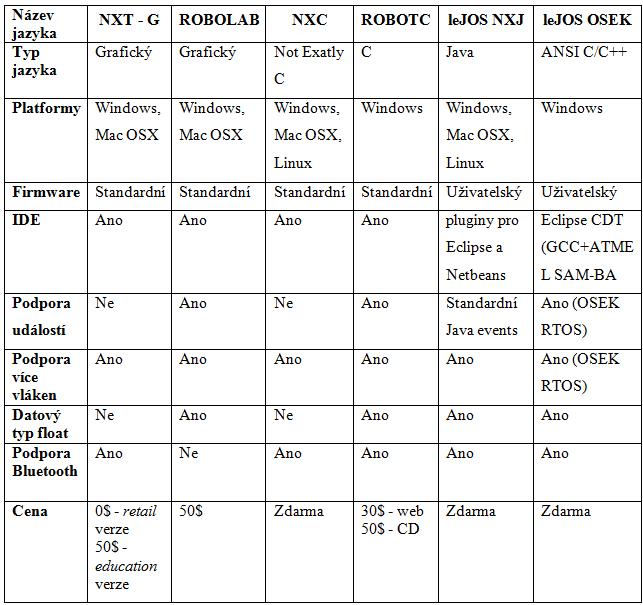
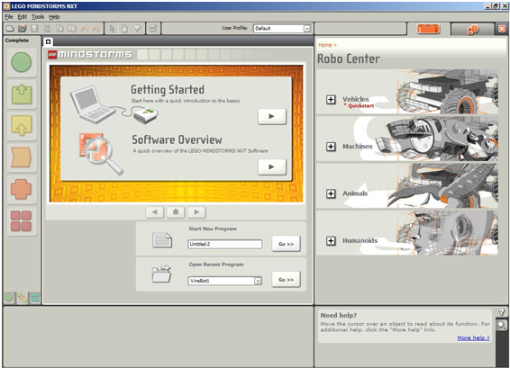
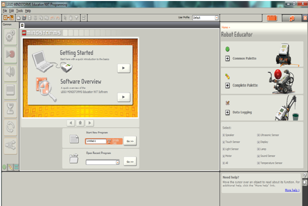

Návod na programování v NXT-G
1 Programování NXT kostky - úvodní informace
Existuje mnoho odlišných způsobů pro psaní
programů, které budou NXT kostkou vykonány. V Tab. 1 jsou shrnuty základní charakteristiky
nejpoužívanějších programovacích jazyků.

Tab. 1:
Přehled programovacích jazyků a jejich vlastností
Pro lepší pochopení problematiky je potřeba vysvětlit
NĚKOLIK ZÁKLADNÍCH POJMŮ.
1.1 NXT - G
NXT – G je nástroj, který slouží k tomu, abyste vašemu robotovi řekli,
co má dělat. Tento nástroj vám dovolí vytvářet programy, které pak nahrajete do vašeho MINDSTORMS robota.
Může se jednat o jednoduché instrukce nebo o rozsáhlé a náročné programy. V názvu tohoto programovacího jazyka
se za pomlčkou vyskytuje písmeno „G“, což je začáteční písmeno anglického slova Graphical. To znamená,
že program není složen z instrukcí, které jsou v textové podobě, ale program je vytvářen v grafickém prostředí
pomocí programovacích bloků. Ty se jednoduše řečeno skládají za sebou.
1.2 Začínáme s programem LEGO MINDSTORMS NXT
Programovací prostředí LEGO MINDSTORMS NXT bylo kompletně vytvořeno podle grafického programovacího softwaru
LabVIEW, který je určen pro návrh automatických měřících a řídících systémů. Uživatelé LabVIEW
si mohou všimnout mnoha podobenství mezi programem LEGO MINDSTORMS NXT a LabVEW, protože National Instruments
a LEGO spolupracovali na tom, aby byly zachovány všechny klíčové grafické programovací prvky používané
v LabVIEW proto, aby bylo uživatelské rozhraní optimalizováno i pro „nováčky“ v užívání
počítačů. Programování je založeno na principu drag-and-drop („táhni a pusť“).
Pomocí tohoto principu jsou z panelu na levé straně obrazovky přesouvány programovací bloky na programovací
plochu programu. Každý blok má unikátní funkci jako například pohyb motorů, detekce zvuku, zobrazení
zprávy nebo třeba měření vzdálenosti. Různými kombinacemi bloků se vytvoří program,
který poté nahrajete do NXT kostky. Zkompilovaný program je do NXT kostky přenesen pomocí USB kabelu nebo pomocí
Bluetooth bezdrátového připojení.
Existují dvě podoby softwaru LEGO MINDSTORMS NXT. První je součástí
NXT robotické stavebnice, kterou
lze koupit v kamenném obchodě. Tato verze se někdy označuje jako retail - maloobchodní. Druhá
je součástí NXT stavebnice, která se dá pořídit v LEGO Educational Division a má v názvu doplněno
education - výuková. Výuková verze je hlavně pořizována školami nebo školícími centry,
ale koupit přes internet si ji samozřejmě může kdokoliv. Na Obr. 1 je vidět
maloobchodní verze se sekcí Robo Center a na Obr. 2 je výuková verze se sekcí Robot Educator .
Robo Center je průvodce, kde jsou krok po kroku instrukce pro sestavení a naprogramování čtyř
NXT robotických modelů. Robot Educator je místo, kde se naučíte programovat vašeho
robota pomocí 39 programovacích příkladů. Maloobchodní a výuková verze jsou v 90 procentech stejné a
liší se pouze v pár funkcích. Ovládání programu je velmi jednoduché a intuitivní.

Obr. 1: Maloobchodní
verze programu LEGO MINDSTORMS NXT s Robo Center

Obr. 2: Výuková verze programu
LEGO MINDSTORMS NXT v2.0 s Robot Educator
2 Instalace a první spuštění - více ZDE
3 Popis programovacího prostředí - více ZDE
4 Vytvoření, uložení, otevření programu - více ZDE
5 Programovací bloky - více ZDE
6 Data hubs, startovní bod, sequence beam - více ZDE
7 Vlastní bloky - více ZDE
8 Proměnné v NXT - G - více ZDE
9 Práce se soubory - více ZDE